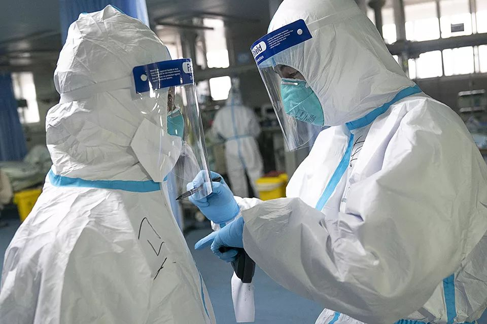

抗击新冠：CT结果将纳入诊断标准
原文链接 备份链接 试剂盒短缺局面缓解后，作为新冠肺炎确诊主要标准的核酸检测再度引发争论。有些在疫情一线工作的医生发现，一些患者核酸检测结果为阴性，病情却在持续发展，且家人也出现感染。除了核酸检测，不少专家提出，CT影像结果也应纳入新冠 …


*************▲*************1月24日，在武汉大学中南医院重症隔离病房，医护人员在隔离服上写下名字，方便辨认。 （新华社记者 熊琦/图）
全文共*5856*字，阅读大约需要12分钟。
湖北省医学影像专业委员会副主委谭伟认为，CT结果非常符合新冠肺炎但核酸检测为阴性的病例大约占30%—40%。
在杭州一所医院，有个病人测了6次核酸试剂都为阴性，直到第7次才测出阳性。
多位一线医生表达了类似观点，对核酸检测最重要的影响因素首先是样品采集。
台州一家定点医院收治的一对核酸检测均为阴性的夫妻，该医院不敢放他们走。妻子天天闹，喊着“国家都确诊我们没病了，你们还把我关在这儿”，还在隔离病房里大骂护士。
本文首发于南方周末 未经授权 不得转载
文 | 南方周末记者 汤禹成 谭畅
南方周末特约撰稿 闫力元 蒋芷毓
责任编辑 | 何海宁
拿到核酸检测结果时，吴姐感到惊讶。
2020年1月，吴姐和儿子李哲（化名）先后发热生病。在核酸检测之前，他们在武汉市第九医院照了CT：儿子的结果是双肺感染，吴姐则是双肺感染性病变，有磨玻璃状阴影。吴姐还照了两次，她说，她曾将CT结果给一些医生看，医生们都认为高度疑似新冠病毒感染，病状也高度吻合。
住在留观室那几天，母子二人住在不同病房。李哲每次去看母亲，都能见到母亲在和不同人通话，念叨着希望能进行核酸测试。1月28日、29日，他们终于盼到了核酸检测的机会，连着做了两次。第一天，医生拿着咽拭子在吴姐口腔取样，第二天，则在鼻腔取样。
只是，结果出乎意料。李哲的核酸检测结果为“阳性”，病症更严重、起病更早的吴姐，却是“阴性”。
这并非个案。在早期，对疑似病人而言，能拿到试剂盒便是“中了彩票”。而现下起了变化。即使症状吻合、CT提示肺部病毒感染的病人，也无法获得“阳性”确诊。
这本是个好消息，如今反倒成为病人新的担忧。
有病人可能是真阴性，但也有些人可能会在数次检测后，由阴性转阳性。他们无法在最初被定义为新冠病毒感染者，也就意味着，他们可能被医院拒之门外，病情可能突然加重，身边人也存在被感染风险。
进入新年的2月，网络上核酸检测为阴性的求助帖渐多。湖北省医学影像专业委员会副主委谭伟告诉南方周末记者，根据其临床经验，他认为CT结果非常符合新冠肺炎但核酸检测为阴性的病例大约占30%—40%。
李哲开始住院治疗，吴姐则没那么顺利，她还没来得及做第三次核酸检测，也不知晓之后是否会转为阳性，病情在加重，日夜担忧着住院问题。
1
“我真的希望自己的检测结果呈阳性。”吴姐说，自己运气不好，如果是阳性，可能就有希望住院了。
按她的描述，她的病情在不断恶化。最早照CT时，吴姐还能行动如常。而现在，她极度依赖氧气。她在留观室的病床离厕所只有不到三米远，但每次上厕所，必须坐很久，等呼吸很稳定，才敢慢慢走过去。鼻子、口腔全都要大口呼气，哪怕是上厕所这么短的时间，她也几乎不能坚持。
另一个家庭，吴希一家七口人，有三个已被确诊。外公在确诊当晚就离世了。床位稀缺，外公的床位留给了后来确诊的外婆。
吴希家做了核酸检测的人里，表姐窦娟是唯一的阴性病人，但她的双肺影像已显示病毒性炎症。她成了吴希最担心的家人之一。吴希说：“两次阴性都不能排除，李文亮都是在第三次才测出阳性的。”
她口中的李文亮，是最早将此次疫情传出的“造谣”医生之一。李文亮共查了3次核酸，第一次结果未知，第二次为阴性，第三次才为阳性。这是他当天在微博上宣布的消息，离他起病已过去了23天。
不惟武汉，在浙江台州，一家定点医院的医务科主任告诉南方周末记者，他在2月3日的视频会议上，听省级专家说起，在杭州一所医院，有个病人测了6次核酸试剂都为阴性，直到第7次才测出阳性。
他所在的医院也有类似病例。一对从武汉回来的夫妻发烧，肺部影像报告也显示病毒感染，但三次核酸检测都是阴性。
也不惟病人，多位在疫区的医生向南方周末记者证实，现在存在病人核酸检测阴性转阳性的情况。
一位在武汉一线支援的医生称，在他所在的医院，很多病人的临床症状和CT影像，都符合新型冠状病毒感染，但这些人的核酸检测结果，阳性少，阴性多。在南方周末记者获得的一张统计表中，很多阴性病人没有进行第二次检测。
这位医生解释，武汉疾控中心每天只给他所在医院50个检测指标，数量有限，医院也无能为力。也有再次检测的病人，这其中，有人仍保持阴性，但也有一人转变为阳性。
很多阴性病人在申请第二次检测机会。林军和他的母亲便是如此。林军女儿说，核酸检测要向社区申请，排队等审批，“但是那样太难等了”。他们换着医院排队，争取再做一次核酸检测，林军听说也有病人检查三次都是阴性，第四次才显示阳性。
2
2月3日，武汉大学中南医院影像科副主任张笑春的朋友圈截图在网络上流传。她认为：在武汉疫区，应该以CT影像作为目前2019-nCoV肺炎筛查的主要依据；同时给予无症状或核酸检测阴性但CT影像阳性的人予以隔离，以防造成家庭聚集感染。
她接受媒体采访称，她发出朋友圈的原因之一是，一些CT诊断阳性的病人由于核酸检测结果为假阴性，漏诊后回到家里，最终造成家庭聚集发病。
为什么检测会存在“假阴性”？
据南方周末记者了解，新型冠状病毒的检测包括“样品的采集”“病毒核酸的提取”“病毒核酸的检测”，每一个步骤都会对结果产生影响。
在采访中，多位一线医生表达了类似观点，最重要的影响因素首先是样品采集。目前，咽拭子在口腔和鼻腔取样是最普遍的样本采集方式。
在武汉一线支援的检验科医生王锐智说，检验业内常说“garbage in, garbage out（垃圾标本出垃圾结果）”。他称，因为新冠病毒主要是在下呼吸道，而咽拭子取样是属于上呼吸道，具体操作是用拭子擦拭两腭弓、咽及腭扁桃体上的分泌物来获取标本。新冠病毒临床管理指南指出，应同时检测上呼吸道和下呼吸道的标本以提高检出率，但在王锐智的观察中，下呼吸道的标本相对难获得，所以很多医院都没有做到同时检测。
另一位一线医生说，咽拭子取样最便于推广，可操作性强，痰液不是随时都有，而肺泡灌洗液的提取涉及气管镜，操作不便，而且医护人员更容易感染。
取样的技术也会影响检测准确性。一位医生说，经验不足的护士可能获取不到合格的标本，从而导致假阴性。但一个更现实的原因存在于经验之外。谭伟告诉南方周末记者，核酸检测最早由湖北省疾控中心来做，很多医护人员由于口对口面对病人，结果被传染，现在检测扩大到更多医院后，一方面有很多不专业的人来检测，取样的部位不够深，到不了咽部，更重要的原因是，有人会害怕自己靠得太近被传染，更容易导致取样不到位。
实验操作也是可能的影响因素。熟悉体外诊断试剂的王锐智说，新型冠状病毒检测的操作步骤比较多，因此实验员操作出错的机会也会比较多。加之目前每天检测的标本非常多，检验人员处于高负荷的工作状态，操作出错几率会增加。
3
另一个病人关心的问题，有关试剂盒性能。
王锐智说，疫情一开始时，试剂盒产能不足，药监部门加快了试剂盒的审批流程，很多厂家都加快研发，赶着上市，导致很多试剂盒的性能没有做好充足的测试和评估。一般而言，这样的试剂从研发到拿证，再进入临床应用，要2-3年时间。而且试剂盒的生产工艺，也会影响每一个批次产品的质量，这也涉及了不同批次检测效能的稳定性。
试剂盒的开发确实有些仓促。一家指定生产这次检测试剂的公司工作人员告诉南方周末记者，公司从研发产品到获证，只用了不到20天的时间。刚开始那会儿，公司常常加班至凌晨，产线上的工人倒是一直没停，他们有四五十名可供调配的工人。
“当时所有公司都在争分夺秒，大家都会说自己是第一个生产的。”这位工作人员说。1月26日，国内4家企业的试剂盒，以破纪录的速度通过国家药监局应急审批通道批准，加速生产抵达各地疾控中心和医院。据南方周末记者了解，此前，药监部门给每家企业都配备了2位审评员，提供24小时的答疑解惑有关审批的方方面面。
如今春节假期结束，该公司的工作人员大多在年初三回岗，开足马力一天产能可达20万人份。不过，日产量根据每天医院和疾控中心的订单需求而定。
当南方周末记者询问试剂盒灵敏度时，对方回应：“我们只能表达自己的试剂盒是灵敏度和特异性很高的，具体数据几乎所有试剂生产公司都难以明确。”这位工作人员说，公司上下最近都很忙，临床数据还来不及收集。
不同公司生产的试剂盒也会有所不同。“每个公司研发的检测病毒核酸位点不同，加上试剂的原料来源不同，生产的工艺不同，每个试剂盒的性能肯定是不一样的。”王锐智告诉南方周末记者。
国家传染病咨询专家委员会成员蒋荣猛提示，采样和试剂问题以外存在另一种可能。他认为，病毒的检测和病人发病的时间也有关系。通常而言，发病早期一两天的阳性程度没有五六天那么高。“就是试剂没毛病、采样没毛病的情况下，发病时间也有影响，早期病毒量低，阳性就可能偏低。”蒋荣猛说，这种逻辑同样存在于胸部CT诊断，也有些病人核酸检测为阳性，但是肺部影像学没有表现，这样的病人同样需要隔离观察。
4
2月2日上午，武汉市第九医院通知吴姐和其他一些确诊阴性的病人转院。吴姐称自己由于极度依赖医院的氧气供应，无法到大厅等待，因而没能转院。而后她自己联系了几家医院，都因种种原因未能成行。
最初和吴姐同在留观室的，有七八十个病人，据病友们的交流，阳性的只是少数，一共只有八九个。吴姐在四楼的留观室住了几天，病人大部分是老年人，大都在发烧，有很多已经出现了呼吸困难，正在吸氧。还有一些接近呼吸衰竭的病人还在挣扎着大喊大叫。几乎每天都有去世的人。
两相对比，确诊为阳性的儿子是幸运的。
2月2日夜晚，医院给吴姐下了最后通牒，让她必须离开。吴姐不走，现在连针都不给打了。
也是在2月2日，武汉市新冠肺炎防控指挥部要求，全市各城区进行“四类人员”的集中收治和隔离工作。这四类人员是：确诊患者、疑似患者、无法排除感染可能的发热患者、确诊患者的密切接触者。武汉已有多家酒店被改造为新冠肺炎隔离点，隔离期间，各区免费提供食宿、医学观察和治疗。
不过，据南方周末记者多方了解，集中隔离的推行主体主要为基层社区，目前很多隔离酒店尚未落实，也有很多酒店不具备医疗条件。很多核酸检测为阴性但病情仍在发展的病人，或是没有被安排到隔离点，或是自己不愿去隔离点。
林军和母亲一直居家隔离，还没有症状的妻子和女儿则住在客厅。林军女儿告诉南方周末记者，她家所在的洪山区，集中隔离还没有大动静，也没有人通知他们去酒店住。
吴希也在拜托社区为大姨协调床位。吴希说，她已经把家里的情况和很多人讲过，在网络上到处求助，也有不少人联系她，但她还是没放弃任何一个机会，“所以我面对你，又再讲了一遍。”2月4日晚，吴希对南方周末记者说。
另外一位病人李先生，肺部感染已较为严重，但两次核酸检测均为阴性。其所在社区想将他安排进酒店，但是他们拒绝了，因为李先生现在仍需治疗，每天都要在定点医院排上七八小时的队伍打针，而社区那边只把他们集中在一起，治疗问题无法解决。
在一线救治的谭伟叙述了一个悲伤的现实。一些病人第一次、第二次核酸检测为阴性，但CT显示有病毒感染，过段时间又用CT检查，才发现病情加重。再查核酸，等到确诊为阳性时，病人已是病情加重，无法挽救。谭伟指出背后的原因——目前相关药物紧缺，病情不重的病人，没有上这类药；没确诊的病人到了隔离点，有些隔离点没有相关药物。
2月4日，南方周末记者致电多位武汉社区网格员询问，那些肺部影像显示病毒感染但核酸检测为阴性的患者应该怎么办？有社区网格员说，他们也不知道这种情况要如何处理；也有人回复，武汉没有定点医院收这种情况的病人。
相比较当年的SARS治疗，根据《传染性非典型肺炎（SARS）诊疗方案（2004版）》，对于有SARS流行病学依据、相应临床表现和肺部X线影像改变，并能排除其他疾病诊断者，就可以作出SARS临床诊断。在临床诊断的基础上，检测出病原，则可作出确定诊断。而在这份诊疗方案中，临床诊断和确定诊断被列为一个级别，另外两级分别是医学隔离观察者和疑似病例。这样的分级，比如今的新型冠状病毒感染肺炎更加宽松，在临床上获得诊断的患者能得到和确诊患者相同级别的隔离治疗。
谭伟也提及自己的临床治疗称，他们主要用CT进行初步诊断。“因为核酸检查时间太长了，检查结果得等一天，所以我们基本上都是用CT去判断。比方说，我们第一次做了CT，对疑似病例症状比较轻的，我们建议他到隔离点去，重一点的我们就会去治疗。一般5天时间，我们会复查CT看看影像学改变。”
5
病人确诊已成为武汉疫区的沉重压力，各方都在寻求办法。张笑春后来也对医疗自媒体丁香园强调：“武汉作为疫区无法在现阶段完全依赖核酸检测去筛查病人，达到切断传染源的防控效果……我提的这个建议只适合咱们灾区，不适合普通、散发病例筛查。普通的散病筛查要做到鉴别诊断，而CT不能做到鉴别诊断。”
在其他城市，诊断显得更加谨慎。
千里之外的上海，感染人数远不及武汉，一切尚显可控。核酸检测仍由疾控机构完成，医院每天可以预约。一位上海三甲医院的呼吸科医生告诉南方周末记者，如今核酸检测控制严格，CT影像学有提示，才允许查。如果影像符合病毒性肺炎的特征，有流行病学史，而且查出白细胞、淋巴细胞偏低，“这种病人即便核酸检测第一次是阴性，也不能放掉，要住在隔离病房去观察，甚至用药，过几天再查一次核酸，有极个别的需要查更多次。”
浙江的温州、台州两座城市，逐渐成为疫情严重的地区。前述台州一家定点医院收治的一对核酸检测均为阴性的夫妻，该医院不敢放他们走。“阴性也不敢放他们走。”前述医务科主任说。那位妻子天天闹，喊着“国家都确诊我们没病了，你们还把我关在这儿”，还在隔离病房里大骂护士。护士觉得委屈，请这位主任去劝说，他和病人聊了半小时，才安抚好她的情绪。
这位主任告诉南方周末记者，虽然两次阴性检测结果达到排除条件，但其实临床上不敢排除。“我们一般引导他达到影像学上基本上没什么症状，或者淋巴细胞等指标恢复到正常后，再检测核酸，没问题就可以回家。”
多位医生提到，这个病情是不断发展的。上述主任分析了这位女病人的病情，她虽然核酸检测为阴性，但是有一部分病灶消退后，又有一部分新发病灶，不是所有病灶都一次性发出来。
他也感受到检测核酸的速度在加快。更早些时，核酸检测要由所在地级市的疾控中心执行。随着检测病人增多，变为所在县级市的疾控中心来负责这项任务。而且，如今县级疾控中心一旦检测出阳性，就算确诊。
面对阳性，医生则更为果断。一位患者的肺部CT没有任何异常，只因从武汉回来，有轻微咳嗽，查了核酸却是阳性。前述主任判断他为冠状病毒上呼吸道感染，尽管肺部CT无异常，也务必需要隔离。
事实上，疫情防控的专家们在如何确诊上也存有争议。经南方周末记者采访了解，大部分专家还是认为有病理学的结果最好，但也有临床专家认为，这在武汉的实际操作中，困难比较大。新冠病毒感染的复杂性，要求医生们综合更多的检验作出更仔细的判断。蒋荣猛向南方周末记者指出影像诊断可以作为辅助途径：“做CT没表现的不一定能排除，有表现的又不一定是这个病，从临床诊断的角度来讲，影像学永远是一个辅助诊断的途径，还是要以病原学诊断为主。”
2月5日，国家卫健委发布《新型冠状病毒感染的肺炎的诊疗方案（试行第五版）》，“疑似病例”标准有所放宽，无论有无流行病学史，只要符合“发热和/或呼吸道症状”和“发病早期白细胞总数正常或降低，或淋巴细胞计数减少”这2条临床表现，便可考虑为疑似病例。更重要的是，它在“疑似病例”和“确诊病例”外新增“临床诊断病例”（限于湖北省内），即“疑似病例具备肺炎影像特征者”，这也意味着在湖北省内，CT影像结果可以作为“临床诊断病例”的判定依据。

征集

《南方周末》现向所有身处新冠肺炎一线的读者公开征集新闻线索。我们欢迎武汉及周边城市医患联系记者，提供防疫前线的一手资讯，讲述您的新春疫情见闻。若您不在武汉，但您身处之所也有与疫情相关的重要新闻线索，亦欢迎您与我们分享。疫情仍在蔓延，南方周末将执笔记录每位国人在疫情面前的希望与困境，与广大读者共同面对疫情。祝愿所有读者朋友们，新春平安。线索可直接给本篇文章留言，格式为：【线索】+内容+您的电话（绝对会对您的个人信息保密）
戳击下面图片 继续阅读专题


原文链接 备份链接 试剂盒短缺局面缓解后，作为新冠肺炎确诊主要标准的核酸检测再度引发争论。有些在疫情一线工作的医生发现，一些患者核酸检测结果为阴性，病情却在持续发展，且家人也出现感染。除了核酸检测，不少专家提出，CT影像结果也应纳入新冠 …
原文链接 备份链接 王广发在2月3日晚上接受了《人物》的采访，这是他从新型冠状病毒肺炎中康复出院的第4天，也是他重新回到医院开始工作的第二天。作为北京大学第一医院呼吸和危重症医学科主任，他最初态度很谨慎，他说自己不想要再接受采访，但是，他 …
原文链接 备份链接 武汉市各区正在加紧把所有发热人员集中隔离，并进行全部发热人员的检测，目的是让疫情全部暴露出来，之后疫情防控也将从“攻坚战”转至“歼灭战” 图/法新 文 |《财经》特派武汉记者 言清 王小 编辑 | 王小 “今天的会非 …
原文链接 备份链接 「早发现、早隔离、早诊断、早治疗」，疫情暴发至今，漩涡中心的武汉正处于发病的高峰期，新增病例数不断增加。而何时能尽快地找到全部疑似病例、有效切断传染源，愈发成为武汉疫情防控的焦点，考验着决策者。 2 月 3 日，身处 …
原文链接 备份链接 记者/李佳楠 实习记者/李一鸣 编辑/宋建华 疾控工作人员去医院采集检测样本 1月30日，人民日报官微发布天津市第28例患者4次检测确诊的情况，“有患者4次检测才确诊”的话题登上热搜，网友感叹病毒狡猾。 深一度发现，除 …